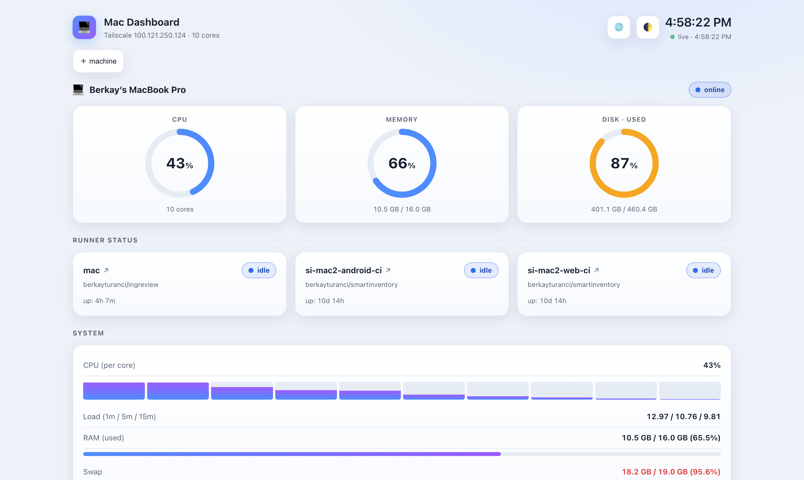

A tiny system + GitHub Actions self-hosted runner dashboard for macOS. One Python file, one HTML file — no build step, no accounts, no token, no cloud. Several Macs show each other's stats over your LAN or Tailscale.

Hand-drawn SVG charts, a background sampler, and a stdlib HTTP server. That's it.
CPU, memory, and disk ring gauges refreshing every second, with ~5 minutes of per-second history and a per-core view.
Busy / idle / offline per runner, with the live job's PR, branch, commit, and actor — read from local files, never the GitHub API.
Point one Mac at the others over LAN or Tailscale and see the whole fleet on one screen. Machines that can't accept inbound can push instead.
Disk matches the macOS Storage figure (purgeable-inclusive); memory matches Activity Monitor. Plus a disk-fill ETA.
Per-runner 30-day health heatmap, flaky-job detection, queue-pressure, and a Gantt timeline — backed by a local SQLite DB.
Threshold alerts, offline-runner mutes, a snooze/maintenance mode, an optional webhook, and cron dead-man checks.
Light / dark / night themes, a wall-mounted TV mode, widget pinning, EN/TR — and a ?demo mode with no backend.
Thermal throttle chip, self-update badge, per-app process rollup, AI-assistant usage, SSH/screen-share shortcuts, offline PWA.
Runs as a launchd agent without Full Disk Access. Stdlib + psutil on the server, zero JS dependencies on the client.
Clone, install one dependency, and run. The installer sets up an isolated venv and a launchd agent for you.
Sets up a virtualenv with psutil and a per-user launchd agent that runs in place from the clone.
# clone and install (venv + launchd agent)
git clone https://github.com/berkayturanci/mac-sysdash.git
cd mac-sysdash
./install.shThe dashboard is now serving on port 8765. Open it locally, or over Tailscale from any device.
open http://localhost:8765Run the same install on each Mac, then use ＋ machine in the header to point one at the others. Or just kick the tires with no backend:
# UI only, sample data, no server
open index.html?demoNo telemetry, no analytics, no accounts, no phone-home. Everything stays on your own machines and your own network. The only traffic is between the Macs you connect yourself.